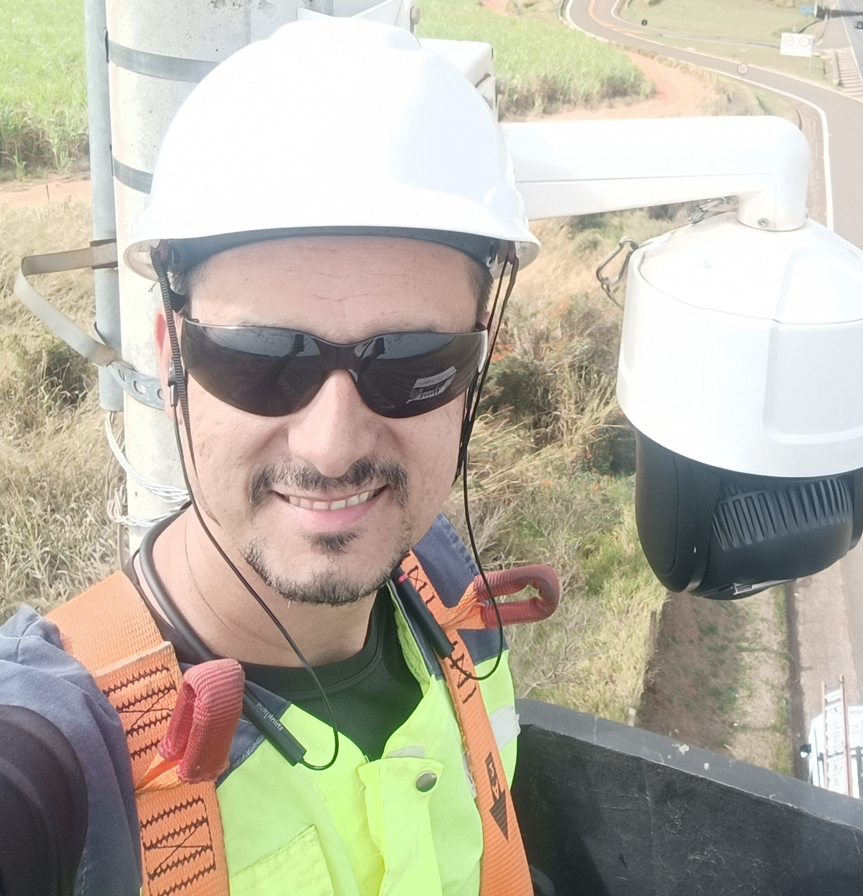

Marcio Barros

Sumary
I live in Brazil, and have been working for many years as an ITS technician,
and now I have decided to branch out to become a Full Stack developer.
Education
- Franca University, Franca-SP
Associates degree - Systems Development Analyst (agosto 2023 - dezembro de 2025)
- SENAI “Conde José Vicente Azevedo”
Certificate in Electronics, 2008/2010
- ETEC Getúlio Vargas
Certificate in Mechatronics, 2006/2007
Work experience
- Eixo-SP Highway Concessionaire S.A, São Carlos-SP
Februaiary 2010 - Actual Job
- Contadores de veículos (SAT, TESC):
- Controle e Fiscalização de Tráfego (radares)
- CFTV de monitoramento rodoviário
- Painéis de mensagens fixo e moveis
- Torres de repetição do Sistema de Rádio Operacional interno
- Monitoramento administrativo dos equipamentos de Controle e Fiscalização
de Tráfego (radares) onde era realizado o agendamento de fiscalização dos
equipamentos junto ao IPEM.
- Manutenção preventiva e corretiva do link de fibra ótica proprietária e todos os
equipamentos agregados a mesma
- Atendimento help desk na sede administrativa realizando atendimento ao
usuário com sistema Windows 7 e Windows 10 com sistema Hypervisior
Microsoft Hyper-V (máquinas virtuais rodando nos servidores dedicados da
empresa)
Skills
- Soft Skills
- Communication Skill
- Problem Solving
- Trouble shooting hardware & software
- Critical thinking
- Flexible and adaptable
- Attention to detail
- Team Collaboration